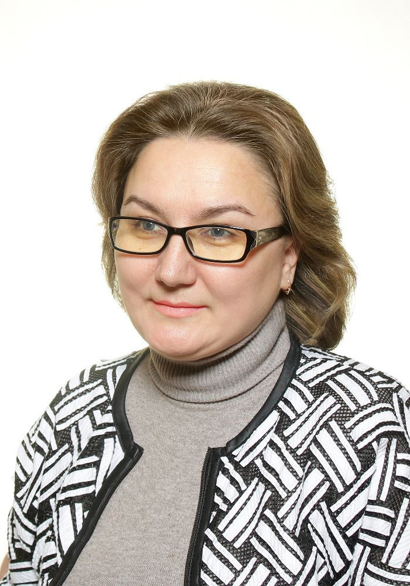
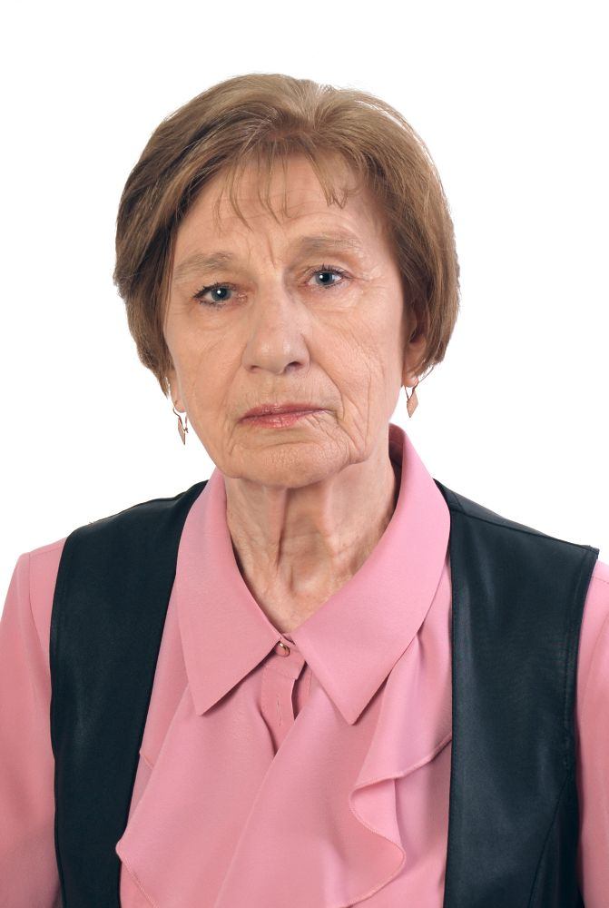

Штатные сотрудники кафедры ВПМ
Антипов Олег Владимирович
доцент, к.т.н
Преподаваемые дисциплины:
- Теория языков программирования и методы трансляции
- Программирование на Java
- Компьютерная графика
Белов Владимир Викторович
профессор, д.т.н.
Преподаваемые дисциплины:
- Информатика
- Проектирование информационных систем
- Проектирование и архитектура программных систем
- Методология и технология проектирования информационных систем

Бубнов Алексей Алексеевич
доцент, к. ф.-м.н.
Преподаваемые дисциплины:
- Тестирование программного обеспечения
- Архитектура вычислительных систем
- Программная инженерия
- Введение в профессиональную деятельность
- Разработка и анализ требований
- Методология программной инженерии
Бубнов Сергей Алексеевич
доцент, к. ф.-м.н.
Преподаваемые дисциплины:
- Архитектура вычислительных систем
- Теория вероятностей и математическая статистика
- Проектирование операционных систем
- Операционные системы
Жулева Светлана Юрьевна
доцент, к.т.н.
Преподаваемые дисциплины:
- Визуальное программирование
- Информатика
Каширин Игорь Юрьевич
профессор, д.т.н.
Преподаваемые дисциплины:
- Технология разработки специального ПО
- Интеллектуальная собственность
- Проектирование систем искусственного интеллекта
Коротаев Алексей Тимофеевич
ст. преподаватель
Преподаваемые дисциплины:
- Администрирование в информационных системах
- Введение в профессиональную деятельность
- Операционные системы
- Обработка данных в сетях D-Link
Крошилин Александр Викторович
профессор, д.т.н.
Преподаваемые дисциплины:
- Проектирование программных интеллектуальных систем в условиях неопределенности
- Математические и инструментальные методы поддержки принятия решений
Крошилина Светлана Владимировна
доцент, к.т.н.
Преподаваемые дисциплины:
- Предметно-ориентированные информационные системы
- Программное обеспечение социально-экономических систем
- Информационные системы в банковском
- Инженерная и компьютерная графика
- Информационный менеджмент
- Компьютерная графика
Макаров Николай Петрович
доцент, к.т.н.
Преподаваемые дисциплины:
- Базы данных
Москвитина Оксана Александровна
ст. преподаватель
Преподаваемые дисциплины:
- Информатика и программирование
- Информатика
- Программирование
Никичкин Борис Владимирович
доцент, к.т.н.
Преподаваемые дисциплины:
- Теория автоматов и формальных языков
- Информатика
Овечкин Геннадий Владимирович
профессор, д.т.н.
Преподаваемые дисциплины:
- Компьютерное моделирование
- Моделирование информационных систем
- Моделирование и проектирование систем
- Математическое моделирование
- Информационная безопасность
- Организационные методы защиты конфиденциальной информации

Проказникова Елена Николаевна
доцент, к.т.н.
Преподаваемые дисциплины:
- Вычислительная математика
- Математическая логика и теория алгоритмов
Пылькин Александр Николаевич
профессор, д.т.н.
Преподаваемые дисциплины:
- Информатика и программирование
Смирнов Евгений Владимирович
доцент, к.э.н.
Преподаваемые дисциплины:
- Экономика программной инженерии
- Комплексные системы обработки информации на предприятии
- Программирование
Соколова Юлия Сергеевна
доцент, к.т.н.
Преподаваемые дисциплины:
- Теория принятия решений
- Основы информационных технологий
Филатов Иван Юрьевич
доцент, к.т.н.
Преподаваемые дисциплины:
- Теория систем и системный анализ

Цуканова Нина Ивановна
доцент
Преподаваемые дисциплины:
- Информатика
- Новые информационные технологии
- Алгоритмические языки и программирование
- Логическое программирование
- Системы искусственного интеллекта
- Базы данных, базы знаний и экспертные системы
- Системы управления знаниями
- Онтология знаний
- Основы теории нечетких множеств
- Информационные технологии в управлении
- Интеллектуальные информационные системы
Швечкова Ольга Григорьевна
доцент, к.т.н.
Преподаваемые дисциплины:
- Информационная безопасность
- Методы и средства защиты информации
Шестеркин Алексей Николаевич
профессор, д.т.н.
Преподаваемые дисциплины:
- Надежность информационных систем
- Основы электроники
- Проектирование человеко-машинного интерфейса
- Основы теории управления